우리 규정과 최신 법령을
AI로 함께 보는 두 가지 방법
규정만 보는 일은 노트북으로 충분합니다. 오늘은 여기에 지금 시행 중인 법령과 곧 바뀌는 법령까지 붙여서, 규정·공고문이 법과 어긋나지 않는지 점검하는 방법을 실습합니다.
왜 필요한가
사전 설문에서 "공고문·안내문이 우리 규정과 법령에 맞는지 점검하는 방법"을 배우고 싶다고 고른 인원입니다.
노동 관련 법 개정을 확인하는 업무가 실제로 있습니다. 지금은 뉴스 요약으로 받고 있어, 법제처 원문 기준으로 바꾸면 정확도가 올라갑니다.
법령은 생각보다 자주 바뀝니다
실습 준비 중 Korean Law로 조회한 결과입니다(2026년 11월 8일 기준). 같은 법이라도 현행본과 시행예정본이 동시에 있습니다.
| 법령 | 지금 시행 중 | 곧 시행되는 개정 |
|---|---|---|
| 고등교육법 | 법률 제21423호 · 2026. 9. 11. 시행 | 법률 제21654호 · 2026. 11. 20. 시행 외 |
| 근로기준법 | 2026. 10. 8. 시행본 | 2026. 12. 8. · 12. 10. 시행 개정 대기 |
| 최저임금법 | 2020. 5. 26. 시행본 | 타법개정 · 2026. 12. 8. 시행 |
공고문을 지금 쓰는데 시행일이 공고 기간 중간에 걸리면 어느 법을 따라야 할까요? 이런 판단을 놓치지 않게 도와주는 것이 오늘의 목표입니다. 최종 판단은 반드시 국가법령정보센터 원문과 소관 부서 확인을 거칩니다.
두 가지 방식: 법령 서재와 법령 비서
난이도가 아니라 하는 일이 다릅니다. 내 업무에 맞는 쪽을 고르세요. 둘 다 쓰셔도 됩니다.
| 법령 서재 (제미나이 노트북 + α) | 법령 비서 (설치형 AI) | |
|---|---|---|
| 하는 일 | 최신 법령을 늘 갖춰 두고 내가 물어봄 | 바뀐 것을 찾아서 알려 줌 |
| 어울리는 업무 | 규정 문의 응대, 공고문·안내문 점검 | 법 개정 모니터링, 주간 브리핑, 규정 개정 준비 |
| 법령 최신성 | 하루 1회 자동 갱신 | 질문할 때마다 실시간 조회 |
| 설치 | 없음 (웹) | 안티그라비티 또는 클로드 데스크톱 |
| 무료 계정 | 무료 가능 학교 계정도 가능 | 무료 가능 개인 계정 권장 |
두 방식 모두 법령은 같은 곳에서 가져옵니다. Korean Law MCP는 국가법령정보센터 Open API를 AI가 쓸 수 있게 감싼 공개 서버로, 법령 API 키 없이도 조회됩니다(2026. 11. 8. 확인).
법령 서재: 제미나이 노트북 + α
① 규정 노트북 만들기
- 새 노트북 만들기NotebookLM(제미나이 노트북)에서 새 노트북을 만들고 이름을 "한양대 규정 + 최신 법령"으로 정합니다.
- 규정 파일 올리기받아 둔 규정 TXT·MD 파일을 업로드합니다. 포털 규정집 주소는 로그인이 필요해서 웹사이트 소스로는 들어가지 않습니다.
- 규정이 잘 들어갔는지 확인"직원 육아휴직과 병가 관련 조항을 규정명·조문 번호와 함께 표로 정리해 줘"라고 물어 조문 번호까지 나오면 성공입니다.
② 노트북 지침 먼저 넣기
질문하기 전에 지침부터 넣어 둡니다. 그래야 이후의 모든 답이 결론 → 근거 표 → 시행예정 → 확인할 것 순서로 나오고, 규정과 법이 다를 때마다 규정 차이 메모가 붙습니다. 지침에 적힌 법령 출처(최신노동복무법령, 최신법인교원법령)는 다음 단계에서 만듭니다.
- 채팅 설정 열기노트북 오른쪽 위 ⋮ → 채팅 설정을 누릅니다.
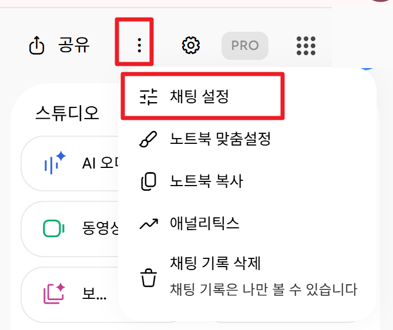
⋮ → 채팅 설정. 같은 메뉴의 '노트북 복사'는 나중에 교직원에게 나눠 줄 때 씁니다. - 맞춤 지침 붙여넣기맞춤을 고르고 아래 지침을 붙여넣습니다. 대답 길이는 기본값을 권합니다. '길게'는 설명이 늘어지고, '짧게'는 표나 메모가 잘릴 수 있습니다.
노트북 맞춤 지침 · 약 850자 (최대 10,000자)
너는 한양대학교 교직원의 규정·법령 검토와 문의 응대를 돕는 도우미다. [근거] - 학교 규정은 한양대 규정 출처에서만 찾는다. - 직원 관련 법령은 '최신노동복무법령', 교원·법인 관련 법령은 '최신법인교원법령' 출처에서만 찾는다. - 출처에 없는 내용은 추측하지 말고 '확인 필요'로 적는다. 일반 상식이나 외부 지식으로 채우지 않는다. [답변 순서] 1. 결론을 두세 문장으로 먼저 쓴다. (가능 / 불가 / 규정 개정 필요 / 확인 필요) 2. 근거를 표로 정리한다: 한양대 규정(규정명·조·항) | 관련 법 조문(법명·조·항) | 법 시행일 | 차이점·의견 3. 법령에 '시행예정' 개정이 있으면 시행일과 함께 따로 알린다. 4. 마지막에 담당자가 확인할 것을 1~3개 적는다. [주의] - 질문 대상이 직원인지 교원인지 먼저 구분한다. 직원은 노동 법령, 교원은 사립학교법 계열을 우선 근거로 쓴다. 구분이 안 되면 둘 다 짧게 안내하고 어느 쪽인지 되묻는다. - 조문 번호와 날짜는 출처에 적힌 그대로 쓴다. - 문의 답변 문구를 요청받으면 직원에게 바로 보낼 수 있는 존댓말 3~4문장으로 쓰고, 근거 규정명을 한 줄 덧붙인다. [규정 차이 메모] 답변 중 한양대 규정과 최신 법령이 다르거나, 법 개정이 규정에 반영되지 않은 부분을 발견하면 답변 맨 끝에 아래 형식으로 따로 적는다. 차이가 없으면 이 칸은 쓰지 않는다. ■ 규정 차이 메모 - 발견일: (오늘 날짜) - 계기가 된 문의: (한 줄 요약) - 한양대 규정: 규정명 제○조 제○항 - 관련 법령: 법명 제○조 (시행일) - 차이: (한두 문장) - 시급도: 높음(이미 시행 중) / 보통(시행예정) / 낮음(표현 정비)
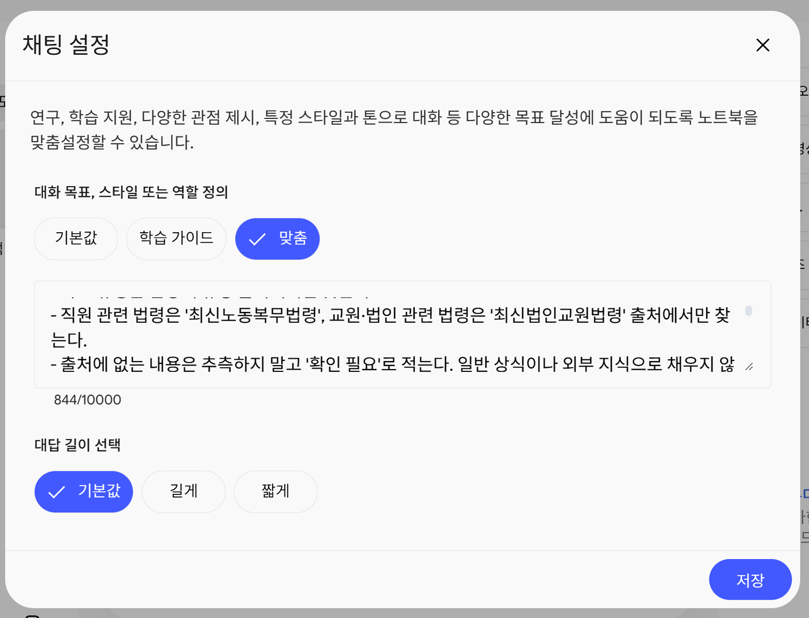
맞춤 선택 → 지침 붙여넣기 → 저장 - 저장 후 짧게 물어보기이제 프롬프트를 길게 쓰지 않아도 됩니다.
③ 법령은 왜 웹사이트로 넣으면 안 될까요
노트북에 넣은 웹페이지·PDF·업로드 파일은 넣은 순간의 사진입니다. 법령 페이지가 나중에 바뀌어도 노트북 속 내용은 그대로입니다. 반면 구글 문서·시트·슬라이드는 원본이 바뀌면 노트북도 따라 바뀝니다. 2026년 5월부터 적용된 자동 동기화 기능입니다.
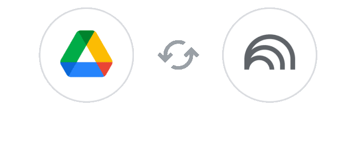
그래서 "최신 법령을 매일 구글 문서에 덮어쓰는 작은 프로그램(α)"을 하나 두면, 노트북은 언제나 최신 법령을 갖게 됩니다.
α: 최신 법령을 매일 채워 주는 구글 문서
법령을 너무 많이 넣으면 AI가 엉뚱한 조문을 근거로 끌어올 수 있습니다. 그래서 주제별로 문서 1개씩 나눕니다. 노동법만 쓰려면 ①만 만들면 됩니다.
| 구글 문서 | 코드의 LAWS에 넣을 법령 | TITLE |
|---|---|---|
| ① 노동·복무 법령 | 근로기준법, 최저임금법, 남녀고용평등과 일ㆍ가정 양립 지원에 관한 법률, 기간제 및 단시간근로자 보호 등에 관한 법률 | 노동·복무 법령 |
| ② 학사·등록금 법령 | 고등교육법, 고등교육법 시행령, 대학 등록금에 관한 규칙 | 학사·등록금 법령 |
| ③ 법인·교원 법령 | 사립학교법, 사립학교법 시행령 | 법인·교원 법령 |
문서 하나에 스크립트 하나. 각 문서에서 확장 프로그램 → Apps Script를 열어 같은 코드를 붙이고, DOC_ID·TITLE·LAWS 세 칸만 그 문서에 맞게 바꿉니다. 노동법만 쓸 거라면 ① 문서 하나만 만들면 됩니다. 코드의 기본값이 노동·복무 법령입니다.
설치 순서 (약 10분)
- 빈 구글 문서 만들기브라우저 주소창에
doc.new를 입력하면 새 구글 문서가 바로 열립니다. 이름을 "최신노동복무법령"으로 정합니다. 이 이름이 노트북의 출처 이름이 되고, 질문할 때 이 이름으로 부릅니다. 법령 서재로 쓸 계정에 로그인된 상태인지 먼저 확인하세요. 그다음 주소창의 링크 전체를 복사합니다.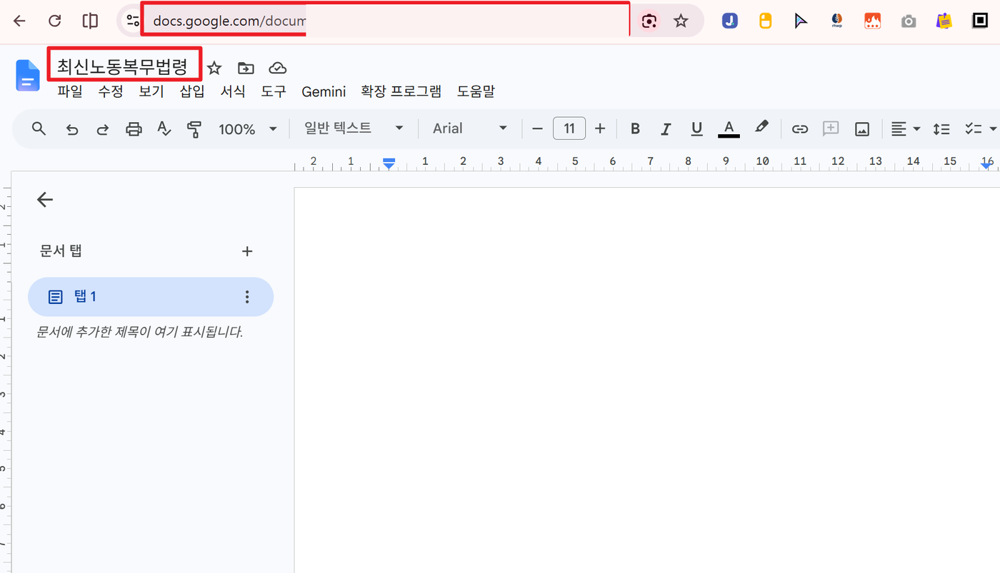
문서 제목을 정하고, 주소창의 링크를 복사해 둡니다. - Apps Script 열기방금 만든 문서 메뉴에서 확장 프로그램 → Apps Script를 누릅니다. 같은 계정으로 바로 열립니다. 기본으로 들어 있는
function myFunction() {...}는 모두 지웁니다.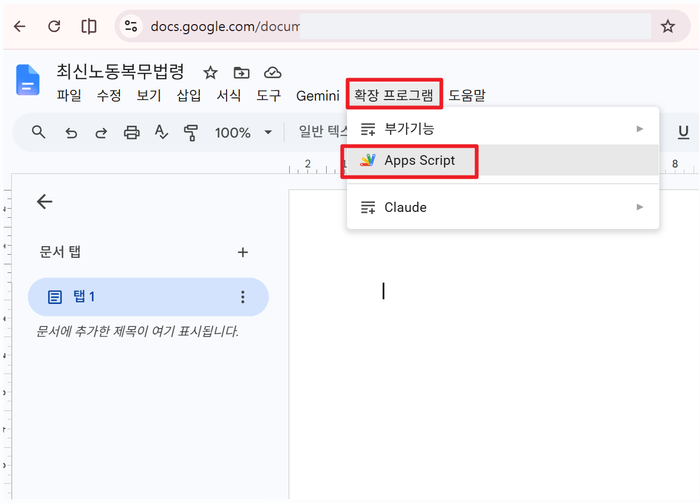
문서 메뉴의 확장 프로그램 → Apps Script - 코드 붙여넣기아래 코드를 복사해 붙여넣고,
여기에_문서_링크_또는_ID자리에 빨간색으로 표시된 칸입니다. 아래 문서 ID 변환기에 링크를 붙여넣고 코드에 ID 넣기를 누르면 그 칸이 내 문서 ID로 바뀌어 초록색이 됩니다. 그다음 코드 복사를 눌러 붙여넣고 저장합니다. 직접 고칠 때는 링크 전체를 넣어도 코드가 알아서 ID를 꺼냅니다. 왼쪽 위 제목 없는 프로젝트를 눌러 이름을노동법령자동갱신처럼 문서에 맞게 바꿔 두면, 권한 승인 화면과 내 프로젝트 목록에서 알아보기 쉽습니다. - 저장하고 한 번 실행하기
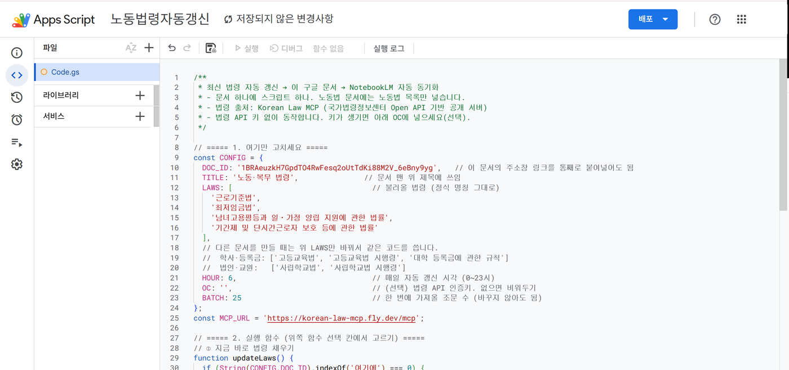
붙여넣은 직후에는 "저장되지 않은 변경사항"이 뜨고, 실행 버튼 옆이 "함수 없음"으로 보입니다. - 저장하기: Ctrl+S를 누르거나 툴바의 저장(💾) 아이콘을 누릅니다. 저장되면 "함수 없음" 자리에 함수 이름이 나타납니다.
- 함수 고르기: 그 칸을 눌러
updateLaws를 고릅니다. - 실행하기: ▶ 실행을 누릅니다. 처음에는 권한 창이 뜹니다.
- 권한 검토 → 계정 선택
- "Google에서 확인하지 않은 앱" 화면 → 왼쪽 아래 고급 → 노동법령자동갱신(으)로 이동(안전하지 않음) → 허용
- 확인하기: 아래쪽 실행 로그에 "노동·복무 법령 완료: OO초"가 뜰 때까지 기다립니다. 근로기준법이 길어서 1~2분 걸릴 수 있습니다.
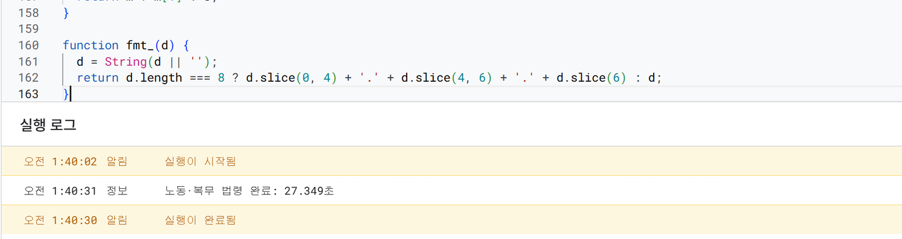
강사 리허설 결과: 노동·복무 법령 4개를 약 27초 만에 채웠습니다.
- 문서 확인구글 문서를 열어 법령명, [현행] 시행일, 🔜 시행예정 표시, 조문이 들어왔는지 봅니다.
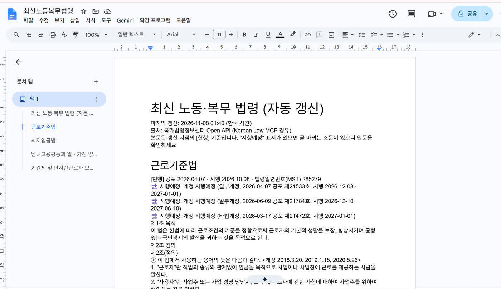
법령마다 제목이 붙어 왼쪽 문서 개요에서 바로 이동할 수 있습니다. 근로기준법에는 12월·내년 시행예정 개정이 함께 표시됩니다. - 매일 자동 실행 등록함수 목록에서
setDailyTrigger를 한 번 실행하면 매일 오전 6시 무렵 이 문서가 갱신됩니다. 시각은 코드의HOUR로 바꿀 수 있습니다.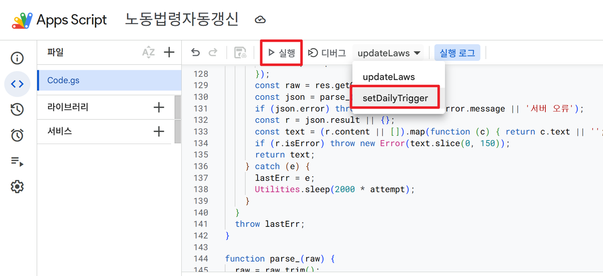
함수 칸에서 setDailyTrigger를 고르고 ▶ 실행을 한 번만 누릅니다. 왼쪽 ⏰ 트리거 메뉴에 updateLaws가 매일 실행으로 등록되면 끝입니다. 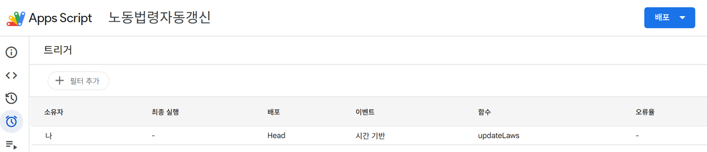
왼쪽 ⏰ 트리거 메뉴. 이벤트 "시간 기반", 함수 "updateLaws"가 보이면 매일 자동 갱신이 켜진 것입니다. 최종 실행은 다음 날 아침 첫 자동 실행 뒤에 채워지고, 오류율이 0%면 정상입니다. - 노트북에 추가노트북에서 소스 추가 → Google Drive를 골라 이 문서를 넣습니다. 파일을 내려받아 업로드하면 자동 동기화가 되지 않습니다.
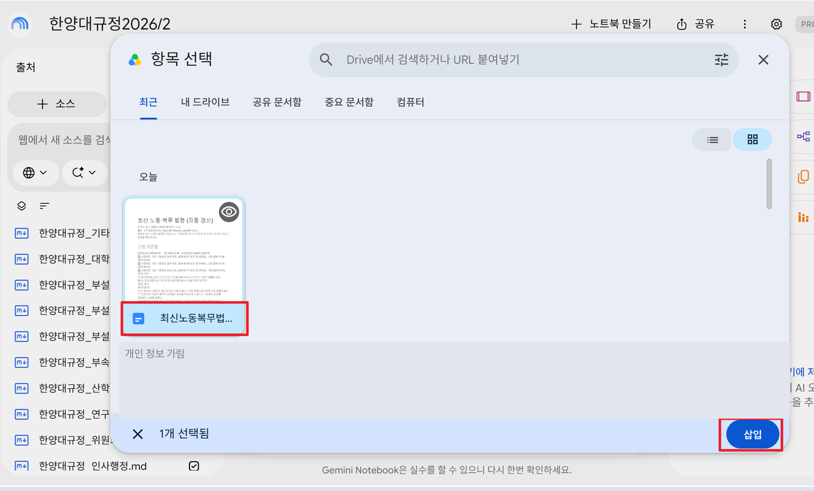
+ 소스 → Google Drive → 문서 선택 → 삽입. 왼쪽 출처 목록에 규정 파일들과 함께 들어갑니다.
문서 ID 변환기
문서 이름: 최신노동복무법령 · Apps Script 이름: 노동법령자동갱신 · 매일 6시 갱신
어떻게 ID만 골라낼까요?
구글 문서 링크는 늘 같은 틀입니다.
docs.google.com/document/d/1AbCdEfG…XyZ12/edit?tab=t.0
/d/는 "다음 칸이 문서 번호"라는 표시이고, 다음 /가 나오기 전까지가 문서 ID입니다. 뒤의 /edit는 편집 화면, ?tab=t.0은 첫 번째 탭을 뜻하는 화면 정보라서 문서를 찾는 데는 필요 없습니다.
변환기는 링크에서 "/d/ 다음에 오는, 영문·숫자·밑줄(_)·하이픈(-)으로만 된 긴 글자 묶음"을 찾습니다. 이런 글자 패턴 찾기 규칙을 정규표현식이라고 하며, 여기서는 /\/d\/([A-Za-z0-9_-]{20,})/를 씁니다. 구글 시트(/spreadsheets/d/)와 슬라이드(/presentation/d/) 링크도 같은 틀이라 그대로 됩니다.
Apps Script 코드 안에도 같은 규칙(toDocId_ 함수)을 넣어 두어서, 링크 전체를 붙여넣어도 동작합니다.
/**
* 최신 법령 자동 갱신 → 이 구글 문서 → NotebookLM 자동 동기화
* - 문서 하나에 스크립트 하나. 노동법 문서에는 노동법 목록만 넣습니다.
* - 법령 출처: Korean Law MCP (국가법령정보센터 Open API 기반 공개 서버)
* - 법령 API 키 없이 동작합니다. 키가 생기면 아래 OC에 넣으세요(선택).
*/
// ===== 1. 여기만 고치세요 =====
const CONFIG = {
DOC_ID: '여기에_문서_링크_또는_ID', // 이 문서의 주소창 링크를 통째로 붙여넣어도 됨
TITLE: '노동·복무 법령', // 문서 맨 위 제목에 쓰임
LAWS: [ // 불러올 법령 (정식 명칭 그대로)
'근로기준법',
'최저임금법',
'남녀고용평등과 일ㆍ가정 양립 지원에 관한 법률',
'기간제 및 단시간근로자 보호 등에 관한 법률'
],
// 다른 문서를 만들 때는 위 LAWS만 바꿔서 같은 코드를 씁니다.
// 학사·등록금: ['고등교육법', '고등교육법 시행령', '대학 등록금에 관한 규칙']
// 법인·교원: ['사립학교법', '사립학교법 시행령']
HOUR: 6, // 매일 자동 갱신 시각 (0~23시)
OC: '', // (선택) 법령 API 인증키. 없으면 비워두기
BATCH: 25 // 한 번에 가져올 조문 수 (바꾸지 않아도 됨)
};
const MCP_URL = 'https://korean-law-mcp.fly.dev/mcp';
// ===== 2. 실행 함수 (위쪽 함수 선택 칸에서 고르기) =====
// ① 지금 바로 법령 채우기
function updateLaws() {
if (String(CONFIG.DOC_ID).indexOf('여기에') === 0) {
throw new Error('DOC_ID 칸에 이 문서의 링크나 ID를 먼저 넣어 주세요.');
}
const started = Date.now();
const doc = DocumentApp.openById(toDocId_(CONFIG.DOC_ID));
const body = doc.getBody();
body.clear();
const now = Utilities.formatDate(new Date(), 'Asia/Seoul', 'yyyy-MM-dd HH:mm');
body.appendParagraph('최신 ' + CONFIG.TITLE + ' (자동 갱신)').setHeading(DocumentApp.ParagraphHeading.TITLE);
body.appendParagraph('마지막 갱신: ' + now + ' (한국 시간)\n' +
'출처: 국가법령정보센터 Open API (Korean Law MCP 경유)\n' +
'본문은 갱신 시점의 [현행] 기준입니다. "시행예정" 표시가 있으면 곧 바뀌는 조문이 있으니 원문을 확인하세요.');
CONFIG.LAWS.forEach(function (name) {
try {
writeLaw_(body, name);
} catch (e) {
body.appendParagraph('⚠ 「' + name + '」 불러오기 실패: ' + e.message);
Logger.log(name + ' 실패: ' + e.message);
}
if (Date.now() - started > 5 * 60 * 1000) { // Apps Script 6분 제한 대비
body.appendParagraph('⚠ 시간 제한으로 일부 법령을 건너뛰었습니다. 법령 수를 줄여 주세요.');
throw new Error('시간 초과');
}
});
doc.saveAndClose();
Logger.log(CONFIG.TITLE + ' 완료: ' + ((Date.now() - started) / 1000) + '초');
}
// ② 매일 자동 갱신 등록 (처음 한 번만 실행)
function setDailyTrigger() {
ScriptApp.getProjectTriggers().forEach(function (t) { ScriptApp.deleteTrigger(t); });
ScriptApp.newTrigger('updateLaws').timeBased().everyDays(1).atHour(CONFIG.HOUR).inTimezone('Asia/Seoul').create();
Logger.log('매일 ' + CONFIG.HOUR + '시 무렵 자동 갱신을 등록했습니다.');
}
// ===== 3. 내부 함수 (고치지 않아도 됨) =====
function writeLaw_(body, name) {
const info = findLaw_(name);
body.appendParagraph(name).setHeading(DocumentApp.ParagraphHeading.HEADING1);
body.appendParagraph('[현행] 공포 ' + fmt_(info.promulgated) + ' · 시행 ' + fmt_(info.effective) +
' · 법령일련번호(MST) ' + info.mst);
info.upcoming.forEach(function (u) { body.appendParagraph('🔜 시행예정: ' + u); });
const articles = listArticles_(info.mst);
for (let i = 0; i < articles.length; i += CONFIG.BATCH) {
const chunk = articles.slice(i, i + CONFIG.BATCH);
const text = callTool_('execute_tool', {
tool_name: 'get_batch_articles',
params: { mst: info.mst, articles: chunk }
});
text.split(/\n{2,}/).forEach(function (block) {
block = block.trim();
if (block.indexOf(name + '\n') === 0) block = block.slice(name.length + 1).trim(); // 맨 앞 법령명 줄 제거
if (!block || block === name) return;
body.appendParagraph(block);
});
}
}
function findLaw_(name) {
const text = callTool_('search_law', { query: name, display: 20 });
const exact = text.split('📂')[0]; // 정확매칭 구역만
const m = exact.match(/MST:\s*(\d+)/);
if (!m) throw new Error('정확히 일치하는 현행 법령을 찾지 못했습니다. 정식 명칭을 확인하세요.');
const d = exact.match(/공포일:\s*(\d{8})\s*\/\s*시행일:\s*(\d{8})/) || [];
const upcoming = text.split('\n').filter(function (l) {
return l.indexOf('🔜') === 0 && l.indexOf('「' + name + '」') > -1;
}).map(function (l) {
return l.replace(/^🔜\s*「[^」]+」\s*/, '').replace(/\s*—\s*시행예정본 조문:.*$/, '');
});
return { mst: m[1], promulgated: d[1], effective: d[2], upcoming: upcoming };
}
function listArticles_(mst) {
const toc = callTool_('get_law_text', { mst: mst });
const list = [];
toc.split('\n').forEach(function (l) {
const m = l.match(/^(제\d+조(?:의\d+)?)(?:\s|$)/);
if (m && list.indexOf(m[1]) === -1) list.push(m[1]);
});
if (!list.length) throw new Error('조문 목록을 읽지 못했습니다.');
return list;
}
function callTool_(tool, args) {
const url = MCP_URL + (CONFIG.OC ? '?oc=' + encodeURIComponent(CONFIG.OC) : '');
const payload = JSON.stringify({
jsonrpc: '2.0', id: Date.now(), method: 'tools/call',
params: { name: tool, arguments: args }
});
let lastErr;
for (let attempt = 1; attempt <= 3; attempt++) { // 서버가 잠깐 멈추면 재시도
try {
const res = UrlFetchApp.fetch(url, {
method: 'post', contentType: 'application/json', payload: payload,
headers: { Accept: 'application/json, text/event-stream' },
muteHttpExceptions: true
});
const raw = res.getContentText();
const json = parse_(raw);
if (json.error) throw new Error(json.error.message || '서버 오류');
const r = json.result || {};
const text = (r.content || []).map(function (c) { return c.text || ''; }).join('\n');
if (r.isError) throw new Error(text.slice(0, 150));
return text;
} catch (e) {
lastErr = e;
Utilities.sleep(2000 * attempt);
}
}
throw lastErr;
}
function parse_(raw) {
raw = raw.trim();
if (raw.charAt(0) === '{') return JSON.parse(raw);
const data = raw.split('\n').filter(function (l) { return l.indexOf('data:') === 0; })
.map(function (l) { return l.slice(5).trim(); }); // SSE 형식 대응
if (!data.length) throw new Error('응답을 읽을 수 없습니다: ' + raw.slice(0, 100));
return JSON.parse(data[data.length - 1]);
}
// 링크 전체가 들어와도 /d/ 뒤의 문서 ID만 꺼냄
function toDocId_(s) {
s = String(s || '').trim();
const m = s.match(/\/d\/([a-zA-Z0-9_-]{20,})/);
return m ? m[1] : s;
}
function fmt_(d) {
d = String(d || '');
return d.length === 8 ? d.slice(0, 4) + '.' + d.slice(4, 6) + '.' + d.slice(6) : d;
}
동작 확인: 2026년 11월 8일 강사 리허설에서 구글 Apps Script로 끝까지 실행해, 노동·복무 법령 4개를 약 27초 만에 문서에 채우는 것을 확인했습니다. 학사·법인 문서용 법령 이름도 모두 정확히 검색되는 것을 확인했습니다.
(심화) 법령 문서 하나 더 만들기: 법인·교원 법령
교원 문의에 근로기준법으로 답하는 실수를 막으려면 사립학교법 문서를 하나 더 둡니다. 노동 문서를 만들 때와 같은 순서를 한 번 더 하면 됩니다. 다른 점은 변환기에서 법인·교원을 고르는 것뿐입니다.
- 새 문서 만들기주소창에
doc.new→ 이름을 "최신법인교원법령"으로 정하고 주소창 링크를 복사합니다. - 코드 준비아래 법인·교원용 변환기에 새 문서 링크를 붙여넣고 코드에 ID 넣기 → 코드 복사를 누릅니다. 제목·법령 목록(사립학교법, 사립학교법 시행령)·갱신 시각(7시)은 이미 들어 있습니다.
법인·교원용 문서 ID 변환기
뽑아낸 문서 ID링크를 붙여넣으면 여기에 나타납니다Code.gs · 법인·교원 법령용/** * 최신 법령 자동 갱신 → 이 구글 문서 → NotebookLM 자동 동기화 * - 문서 하나에 스크립트 하나. 노동법 문서에는 노동법 목록만 넣습니다. * - 법령 출처: Korean Law MCP (국가법령정보센터 Open API 기반 공개 서버) * - 법령 API 키 없이 동작합니다. 키가 생기면 아래 OC에 넣으세요(선택). */ // ===== 1. 여기만 고치세요 ===== const CONFIG = { DOC_ID: '여기에_문서_링크_또는_ID', // 이 문서의 주소창 링크를 통째로 붙여넣어도 됨 TITLE: '법인·교원 법령', // 문서 맨 위 제목에 쓰임 LAWS: [ // 불러올 법령 (정식 명칭 그대로) '사립학교법', '사립학교법 시행령' ], // 다른 문서를 만들 때는 위 LAWS만 바꿔서 같은 코드를 씁니다. // 학사·등록금: ['고등교육법', '고등교육법 시행령', '대학 등록금에 관한 규칙'] // 법인·교원: ['사립학교법', '사립학교법 시행령'] HOUR: 7, // 매일 자동 갱신 시각 (0~23시) OC: '', // (선택) 법령 API 인증키. 없으면 비워두기 BATCH: 25 // 한 번에 가져올 조문 수 (바꾸지 않아도 됨) }; const MCP_URL = 'https://korean-law-mcp.fly.dev/mcp'; // ===== 2. 실행 함수 (위쪽 함수 선택 칸에서 고르기) ===== // ① 지금 바로 법령 채우기 function updateLaws() { if (String(CONFIG.DOC_ID).indexOf('여기에') === 0) { throw new Error('DOC_ID 칸에 이 문서의 링크나 ID를 먼저 넣어 주세요.'); } const started = Date.now(); const doc = DocumentApp.openById(toDocId_(CONFIG.DOC_ID)); const body = doc.getBody(); body.clear(); const now = Utilities.formatDate(new Date(), 'Asia/Seoul', 'yyyy-MM-dd HH:mm'); body.appendParagraph('최신 ' + CONFIG.TITLE + ' (자동 갱신)').setHeading(DocumentApp.ParagraphHeading.TITLE); body.appendParagraph('마지막 갱신: ' + now + ' (한국 시간)\n' + '출처: 국가법령정보센터 Open API (Korean Law MCP 경유)\n' + '본문은 갱신 시점의 [현행] 기준입니다. "시행예정" 표시가 있으면 곧 바뀌는 조문이 있으니 원문을 확인하세요.'); CONFIG.LAWS.forEach(function (name) { try { writeLaw_(body, name); } catch (e) { body.appendParagraph('⚠ 「' + name + '」 불러오기 실패: ' + e.message); Logger.log(name + ' 실패: ' + e.message); } if (Date.now() - started > 5 * 60 * 1000) { // Apps Script 6분 제한 대비 body.appendParagraph('⚠ 시간 제한으로 일부 법령을 건너뛰었습니다. 법령 수를 줄여 주세요.'); throw new Error('시간 초과'); } }); doc.saveAndClose(); Logger.log(CONFIG.TITLE + ' 완료: ' + ((Date.now() - started) / 1000) + '초'); } // ② 매일 자동 갱신 등록 (처음 한 번만 실행) function setDailyTrigger() { ScriptApp.getProjectTriggers().forEach(function (t) { ScriptApp.deleteTrigger(t); }); ScriptApp.newTrigger('updateLaws').timeBased().everyDays(1).atHour(CONFIG.HOUR).inTimezone('Asia/Seoul').create(); Logger.log('매일 ' + CONFIG.HOUR + '시 무렵 자동 갱신을 등록했습니다.'); } // ===== 3. 내부 함수 (고치지 않아도 됨) ===== function writeLaw_(body, name) { const info = findLaw_(name); body.appendParagraph(name).setHeading(DocumentApp.ParagraphHeading.HEADING1); body.appendParagraph('[현행] 공포 ' + fmt_(info.promulgated) + ' · 시행 ' + fmt_(info.effective) + ' · 법령일련번호(MST) ' + info.mst); info.upcoming.forEach(function (u) { body.appendParagraph('🔜 시행예정: ' + u); }); const articles = listArticles_(info.mst); for (let i = 0; i < articles.length; i += CONFIG.BATCH) { const chunk = articles.slice(i, i + CONFIG.BATCH); const text = callTool_('execute_tool', { tool_name: 'get_batch_articles', params: { mst: info.mst, articles: chunk } }); text.split(/\n{2,}/).forEach(function (block) { block = block.trim(); if (block.indexOf(name + '\n') === 0) block = block.slice(name.length + 1).trim(); // 맨 앞 법령명 줄 제거 if (!block || block === name) return; body.appendParagraph(block); }); } } function findLaw_(name) { const text = callTool_('search_law', { query: name, display: 20 }); const exact = text.split('📂')[0]; // 정확매칭 구역만 const m = exact.match(/MST:\s*(\d+)/); if (!m) throw new Error('정확히 일치하는 현행 법령을 찾지 못했습니다. 정식 명칭을 확인하세요.'); const d = exact.match(/공포일:\s*(\d{8})\s*\/\s*시행일:\s*(\d{8})/) || []; const upcoming = text.split('\n').filter(function (l) { return l.indexOf('🔜') === 0 && l.indexOf('「' + name + '」') > -1; }).map(function (l) { return l.replace(/^🔜\s*「[^」]+」\s*/, '').replace(/\s*—\s*시행예정본 조문:.*$/, ''); }); return { mst: m[1], promulgated: d[1], effective: d[2], upcoming: upcoming }; } function listArticles_(mst) { const toc = callTool_('get_law_text', { mst: mst }); const list = []; toc.split('\n').forEach(function (l) { const m = l.match(/^(제\d+조(?:의\d+)?)(?:\s|$)/); if (m && list.indexOf(m[1]) === -1) list.push(m[1]); }); if (!list.length) throw new Error('조문 목록을 읽지 못했습니다.'); return list; } function callTool_(tool, args) { const url = MCP_URL + (CONFIG.OC ? '?oc=' + encodeURIComponent(CONFIG.OC) : ''); const payload = JSON.stringify({ jsonrpc: '2.0', id: Date.now(), method: 'tools/call', params: { name: tool, arguments: args } }); let lastErr; for (let attempt = 1; attempt <= 3; attempt++) { // 서버가 잠깐 멈추면 재시도 try { const res = UrlFetchApp.fetch(url, { method: 'post', contentType: 'application/json', payload: payload, headers: { Accept: 'application/json, text/event-stream' }, muteHttpExceptions: true }); const raw = res.getContentText(); const json = parse_(raw); if (json.error) throw new Error(json.error.message || '서버 오류'); const r = json.result || {}; const text = (r.content || []).map(function (c) { return c.text || ''; }).join('\n'); if (r.isError) throw new Error(text.slice(0, 150)); return text; } catch (e) { lastErr = e; Utilities.sleep(2000 * attempt); } } throw lastErr; } function parse_(raw) { raw = raw.trim(); if (raw.charAt(0) === '{') return JSON.parse(raw); const data = raw.split('\n').filter(function (l) { return l.indexOf('data:') === 0; }) .map(function (l) { return l.slice(5).trim(); }); // SSE 형식 대응 if (!data.length) throw new Error('응답을 읽을 수 없습니다: ' + raw.slice(0, 100)); return JSON.parse(data[data.length - 1]); } // 링크 전체가 들어와도 /d/ 뒤의 문서 ID만 꺼냄 function toDocId_(s) { s = String(s || '').trim(); const m = s.match(/\/d\/([a-zA-Z0-9_-]{20,})/); return m ? m[1] : s; } function fmt_(d) { d = String(d || ''); return d.length === 8 ? d.slice(0, 4) + '.' + d.slice(4, 6) + '.' + d.slice(6) : d; } - Apps Script에 붙여넣기새 문서에서 확장 프로그램 → Apps Script → 기본 코드 지우고 붙여넣기 → 프로젝트 이름을
법인교원법령자동갱신으로 바꾸고 저장합니다.화면 보기 (1장)
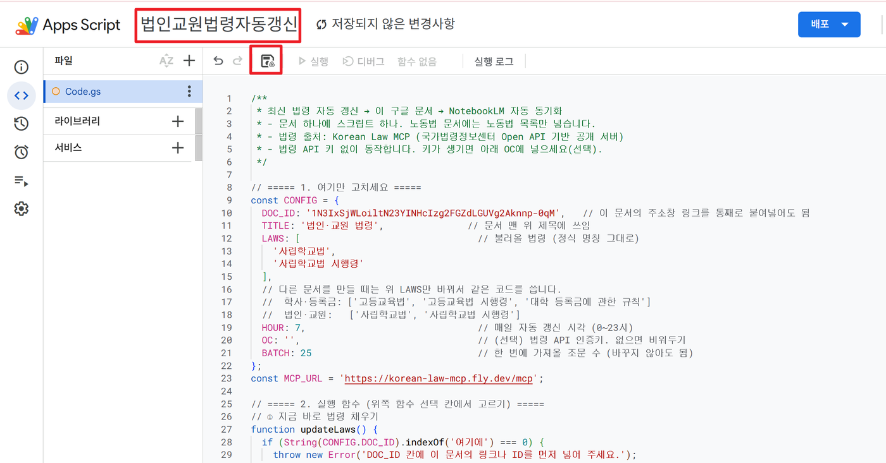
프로젝트 이름, 새 문서 ID, 사립학교법 목록, 7시 갱신을 확인한 뒤 저장(💾)을 누릅니다. - 실행·자동 갱신
updateLaws실행(권한 승인) → 문서 확인 →setDailyTrigger한 번 실행.화면 보기 (5장)
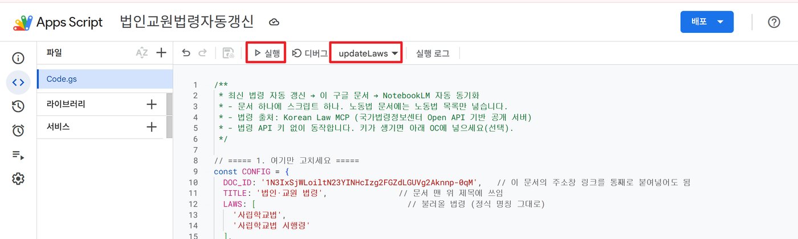
저장되면 함수 칸에 updateLaws가 나타납니다. 고른 상태에서 ▶ 실행. 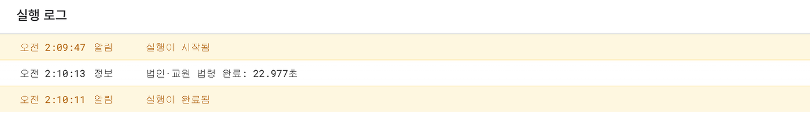
강사 리허설: 사립학교법·시행령을 약 23초 만에 채웠습니다. 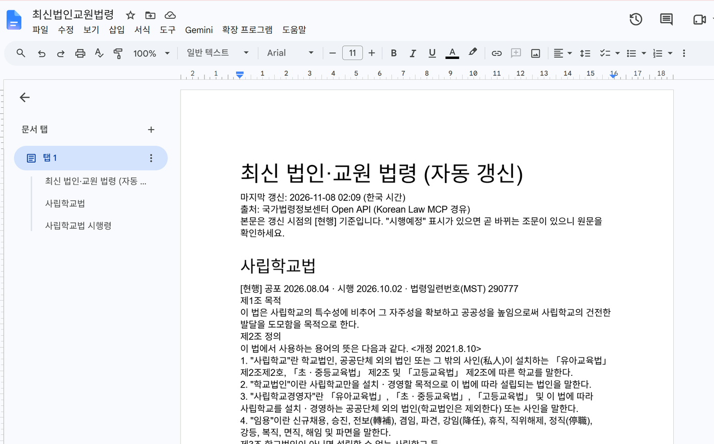
문서 개요에 사립학교법·사립학교법 시행령이 생기고, 현행 시행일(2026. 10. 2.)과 조문이 채워졌습니다. 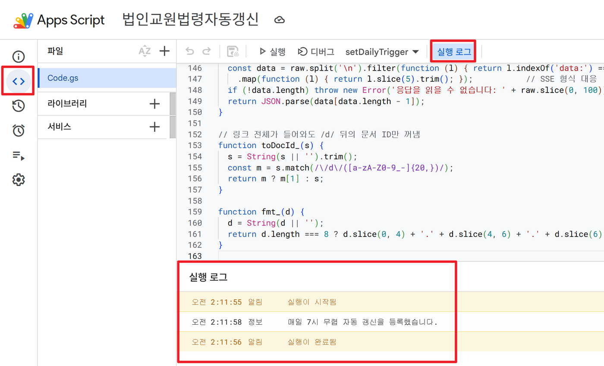
setDailyTrigger 실행 → "매일 7시 무렵 자동 갱신을 등록했습니다." 노동 문서(6시)와 시간이 겹치지 않습니다. 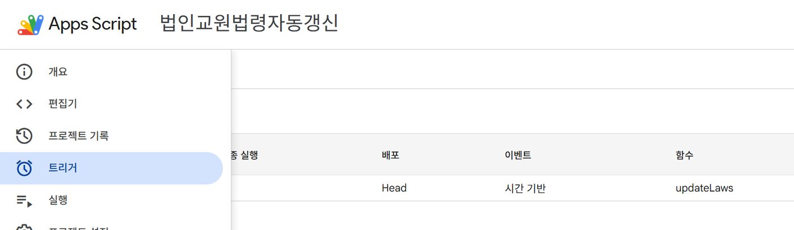
⏰ 트리거 메뉴에 updateLaws · 시간 기반이 생기면 완료입니다. - 노트북에 추가+ 소스 → Google Drive → 최신법인교원법령 → 삽입. 노트북 지침에는 이미 이 출처 이름이 들어 있습니다.
화면 보기 (1장)
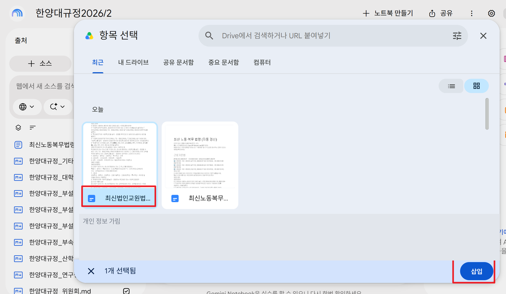
최신법인교원법령 선택 → 삽입. 왼쪽 출처 목록에 먼저 넣은 최신노동복무법령이 보입니다.
문서의 사본 만들기를 쓰면 Apps Script도 같이 복사되지만, 코드 속 문서 ID와 프로젝트 이름이 원본 그대로 따라와 헷갈리기 쉽습니다. 연수에서는 새 문서로 만드는 방법을 권합니다.
노트북에 물어보기: 대조 점검, 문의 응대, 규정 개정 근거 쌓기
제3조에서 넣은 지침과 제3조의2의 법령 문서가 갖춰졌으면, 이제 노트북에 물어봅니다. 문의에 답하다 보면 "규정은 이렇게 돼 있는데 법은 바뀌었네" 하는 순간이 계속 생기고, 지침 덕분에 그때마다 규정 차이 메모가 자동으로 붙습니다.
① 규정과 최신 법령 대조 점검
노트북에 함께 물어보기 예시: "최신노동복무법령 문서와 한양대 규정을 비교해서, 직원 복무 규정 중 현행 법보다 불리하거나 개정이 필요한 조항을 [규정 조항 | 관련 법 조문 | 법 시행일 | 차이점 | 수정 제안] 표로 정리해 줘. 근거가 없으면 '확인 필요'로 표시해 줘."
결과 예시: 육아휴직·출산휴가 규정 대조
강사 리허설에서 노트북에 아래처럼 물었을 때의 결과입니다. 규정 조항과 법 조문을 짝지어, 법 시행일과 차이점을 표로 정리하고 각 칸에 출처 번호를 붙였습니다.
최신노동복무법령 문서와 한양대 규정을 비교해서, 직원 육아휴직·출산휴가 관련 규정 중 현행 법과 다르거나 개정이 필요한 부분을 [규정 조항 | 관련 법 조문 | 법 시행일 | 차이점] 표로 정리해 줘. 근거가 없으면 '확인 필요'로 표시해 줘.
결과 화면 펼쳐 보기 (개정 필요 항목 9개)
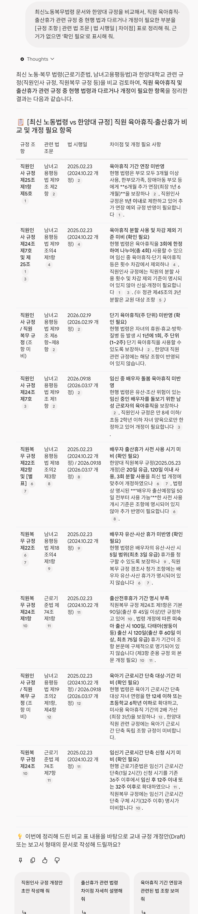
결과를 읽는 법: 이 표는 검토할 곳을 찾아 주는 초안입니다. 각 칸의 출처 번호를 눌러 규정 원문과 법 조문을 직접 확인하고, 특히 '확인 필요'가 붙은 항목은 국가법령정보센터 원문과 소관 부서 확인을 거친 뒤에 개정안에 반영합니다.
② 짧게 묻는 문의 응대
직원이 배우자 출산휴가를 나눠 쓸 수 있는지 물어봤어
결과 화면 펼쳐 보기 (결론 → 근거 표 → 시행예정 → 확인할 것 → 답변 문구 → 규정 차이 메모)
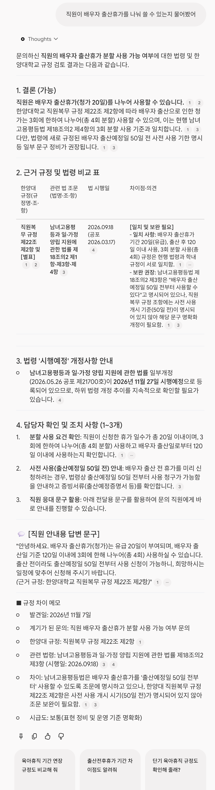
교원 문의도 확인해 보기
법인·교원 문서까지 넣었다면, 교원 질문에는 근로기준법이 아니라 사립학교법 쪽을 근거로 답하는지 확인합니다.
교원이 육아휴직을 쓰고 싶다고 문의했어
결과 화면 펼쳐 보기 (2장)
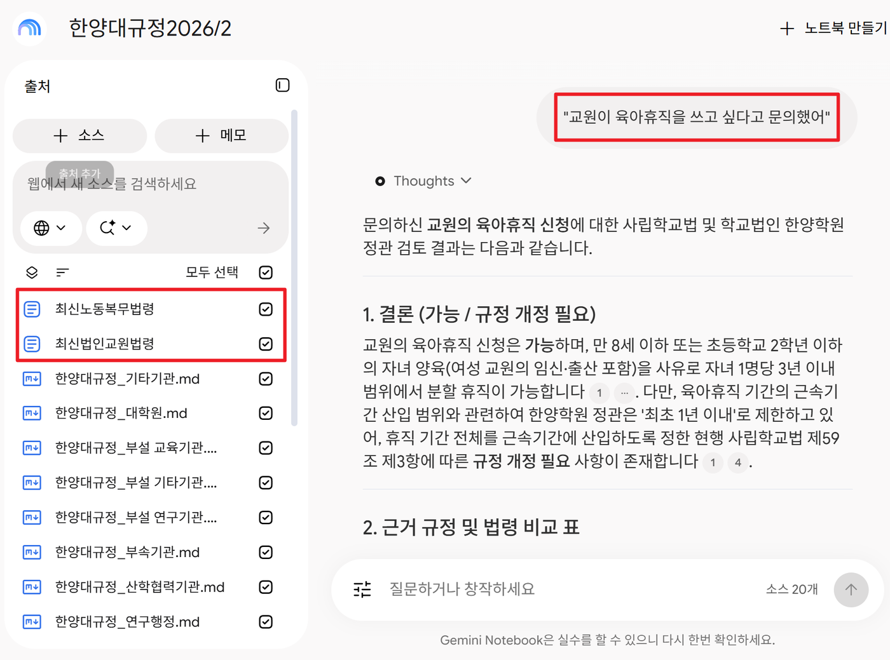
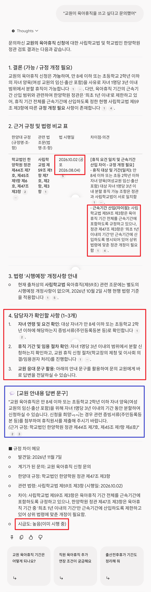
직원·교원 구분 확인: "육아휴직을 쓰고 싶다는 문의가 왔어"처럼 대상이 없는 질문을 넣어, 직원인지 교원인지 되묻는지도 확인해 보세요.
③ 규정 차이 메모를 모아 개정 건의로
- 메모로 저장답변 끝에 ■ 규정 차이 메모가 나오면 그 답변을 노트북 메모로 저장합니다. 제목 앞머리를
[차이] 배우자 출산휴가처럼 통일하면 나중에 모으기 쉽습니다. - 한 달에 한 번 모으기쌓인 메모를 놓고 아래처럼 물어 규정 담당 부서에 넘길 표를 만듭니다. 같은 차이가 문의에서 여러 번 나왔다는 횟수가 개정을 설득하는 근거가 됩니다.
이번 달 [차이] 메모를 모두 모아서, 규정별로 묶고 시급도 순으로 정리한 '규정 개정 검토 요청' 표를 만들어 줘. 같은 내용이 여러 번 나왔으면 횟수도 적어 줘.
메모의 발견일 같은 날짜는 AI가 적는 값이라 하루 정도 어긋날 수 있습니다. 개정 건의로 넘기기 전에 날짜와 조문 번호를 원문으로 한 번 더 확인하세요.
(선택) 개인 유료 계정이라면: 제미나이에 Korean Law 직접 연결
제미나이 개인 유료 계정에서는 법령 MCP를 바로 붙일 수 있습니다. 무료·학교 계정에서는 이 메뉴가 열리지 않습니다(2026. 11. 8. 강사 확인).
- 커넥터 화면 열기제미나이(웹 또는 데스크톱 앱) 왼쪽 더보기 → 맞춤설정을 누르고 위쪽 커넥터 탭으로 갑니다.
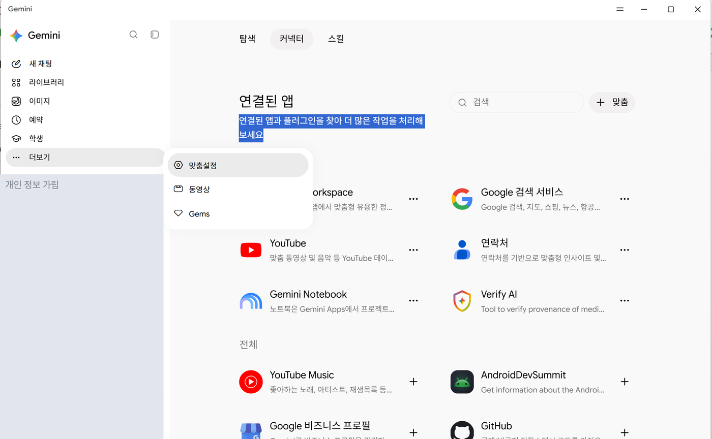
더보기 → 맞춤설정 → 커넥터. 오른쪽 위에 + 맞춤 버튼이 있습니다. - MCP 서버 주소 입력+ 맞춤을 누르면 "MCP 서버에 연결" 창이 뜹니다. 아래 주소를 붙여넣고 다음을 누릅니다. 추가 설정은 건드리지 않습니다.
MCP 서버 URL
https://korean-law-mcp.fly.dev/mcp
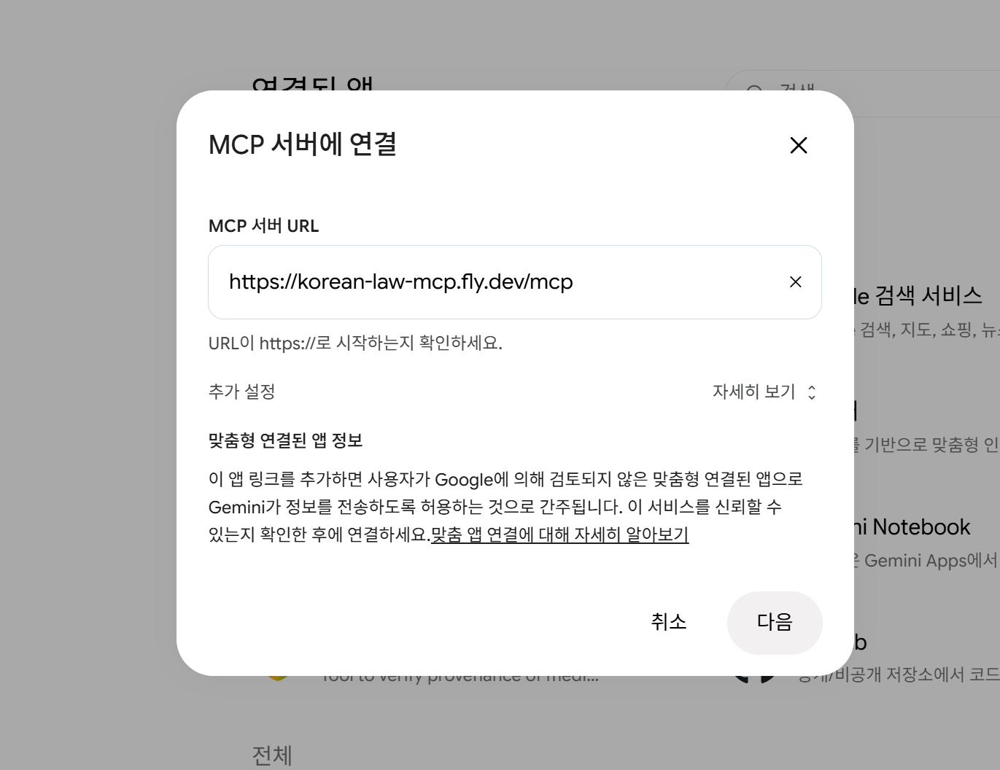
주소가 https://로 시작하는지 확인합니다. - 도구 목록 확인 후 연결"맞춤 앱 저장" 창에 Korean Law와 사용 가능한 작업(search_law, get_law_text 등 10개)이 보이면 연결을 누릅니다.
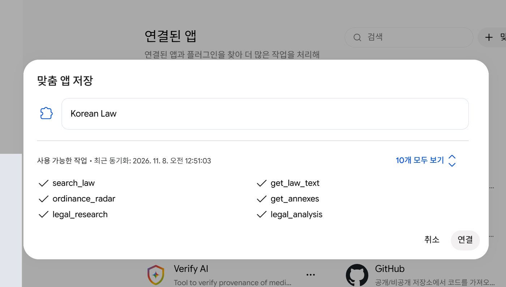
서버가 제공하는 도구가 정상적으로 불러와졌다는 뜻입니다. - 연결된 앱에서 확인커넥터 화면 맨 아래 맞춤 앱에 Korean Law가 생깁니다.
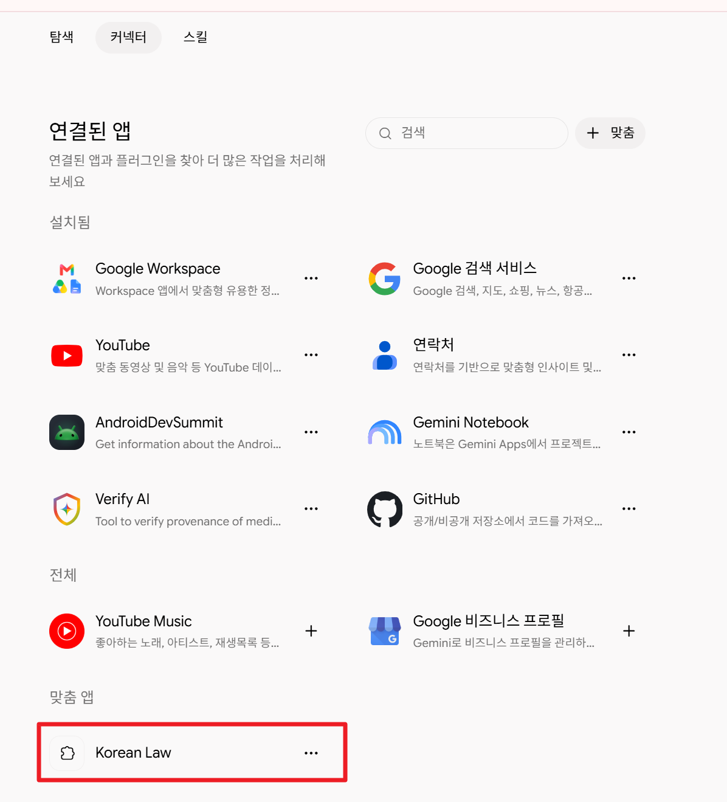
맞춤 앱 영역에 Korean Law가 보이면 연결 완료입니다. - 연결 테스트새 채팅에서
@Korean Law로 부르고 조문과 최근 개정을 물어봅니다. 출처에 국가법령정보센터가 표시되면 정상입니다.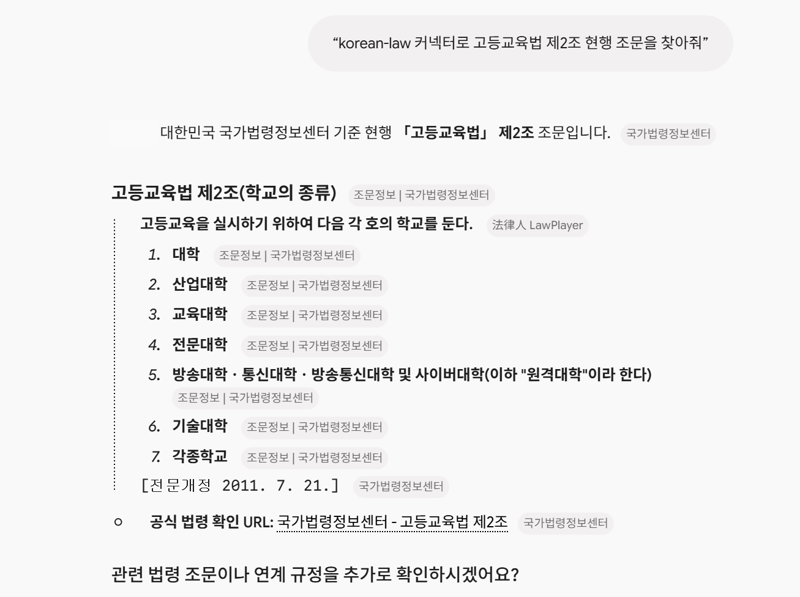
"korean-law 커넥터로 고등교육법 제2조 현행 조문을 찾아줘"의 결과 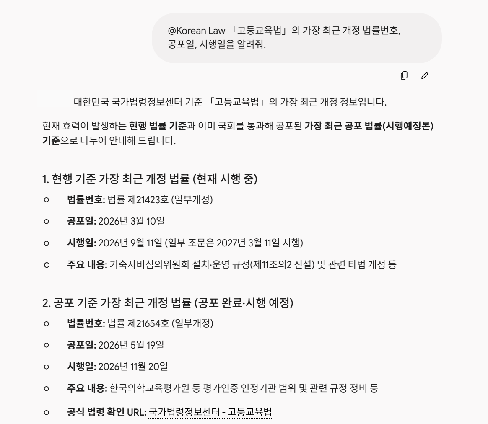
"고등교육법의 가장 최근 개정 법률번호, 공포일, 시행일"의 결과. 현행(9. 11. 시행)과 시행예정(11. 20. 시행)을 나눠 보여 줍니다. 국가법령정보센터 원문과 일치함을 확인했습니다.
이후 규정 노트북을 함께 첨부하고 @Korean Law와 같이 질문하면, 한 채팅에서 규정과 최신 법령을 대조할 수 있습니다.
무료 제미나이 채팅에 이 주소를 붙여넣고 "여기서 찾아봐"라고 하면 동작하지 않습니다. MCP 주소는 웹페이지가 아니라 정해진 형식의 요청에만 답하는 연결 주소라서, 웹페이지처럼 열면 오류(405)만 돌아옵니다.
법령 비서: 설치형 AI + Korean Law
설치형 AI는 질문할 때마다 법령을 실시간으로 조회하고, 결과를 내 컴퓨터 폴더에 기록으로 남길 수 있습니다. "지난주와 비교해 바뀐 것만" 같은 일이 가능해집니다.
| 도구 | 무료 계정 | 비고 |
|---|---|---|
| 안티그라비티 | 가능 | 무료 개인 요금제는 주간 사용 한도가 있음. 예약 작업(Automations) 기능 있음 |
| 클로드 데스크톱 (코워크) | 가능 | 무료 계정은 맞춤 커넥터 1개까지 → Korean Law를 그 1개로 |
| 챗GPT | 유료만 | 맞춤 MCP는 개발자 모드(Plus 이상)에서만 연결 가능 |
A. 안티그라비티
안티그라비티 실습은 두 번째 탭에 따로 정리했습니다. Korean Law 연결부터 내 규정 MCP 만들기까지 이어집니다.
B. 클로드 데스크톱 (코워크)
- 설치·로그인클로드 데스크톱 앱을 설치하고 로그인합니다. 무료 계정도 됩니다.
- 맞춤 커넥터 추가설정(또는 맞춤설정) → 커넥터 → 맞춤 커넥터 추가 → 이름
Korean Law, URL은 아래 주소 → 추가. - 규정 폴더 연결코워크에서 규정 TXT·MD가 든 폴더를 작업 폴더로 고르면 규정은 파일로 읽고, 법령은 Korean Law로 조회합니다.
https://korean-law-mcp.fly.dev/mcp
C. 비서에게 맡길 주간 브리핑
작업 폴더에 법령브리핑_기록.md라는 빈 파일을 하나 만들어 두고 아래처럼 시킵니다. 안티그라비티에서는 이 지시를 예약 작업으로 걸어 매주 금요일 오전에 돌릴 수 있습니다(무료 한도 안에서).
Korean Law 도구만 사용해서 아래 법령의 [현행] 시행일과 '시행예정' 개정을 조회해 줘. - 근로기준법, 최저임금법, 남녀고용평등과 일ㆍ가정 양립 지원에 관한 법률, 기간제 및 단시간근로자 보호 등에 관한 법률, 근로자퇴직급여 보장법 작업 폴더의 법령브리핑_기록.md 에 적힌 지난 결과와 비교해서 새로 생긴 개정만 표로 정리해 줘. 표: 법령 | 공포일 | 시행일 | 개정 구분 | 바뀐 조문(조회된 범위) 그다음 오늘 날짜와 함께 이번 결과를 같은 파일 맨 아래에 덧붙여 줘. 뉴스나 블로그는 근거로 쓰지 말고, 조회되지 않은 내용은 '확인 필요'로 적어 줘.
D. 제미나이 예약 (개인 유료 계정)
제미나이에 Korean Law를 연결해 두었다면, 브리핑을 예약으로 걸 수 있습니다. 예약 메뉴에서 직접 만들어도 되고, 채팅에 "매주 금요일 오전 9시에 ~해 줘"라고 말해도 예약이 만들어집니다.
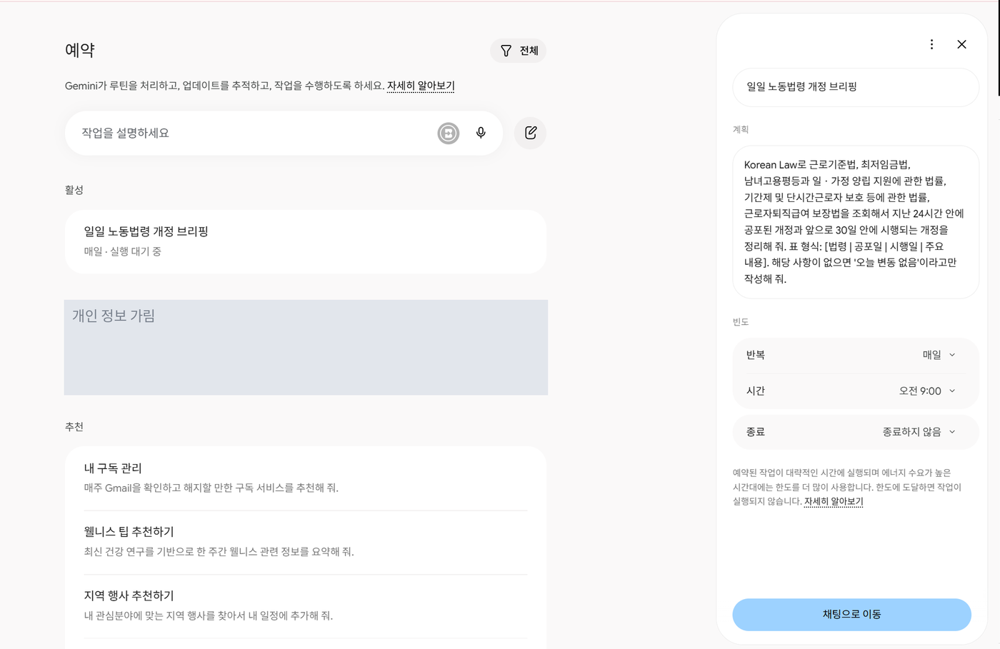
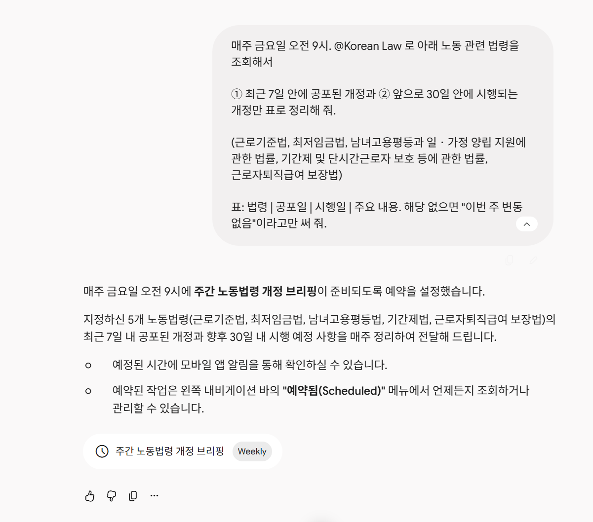
예약은 실행할 때마다 새로 시작해서 지난 결과를 기억하지 못할 수 있습니다. 그래서 "지난주와 비교" 대신 날짜 범위로 지시하는 편이 안정적입니다. 매일 돌린다면 같은 개정이 반복되지 않도록 범위를 좁힙니다.
@Korean Law 를 사용해서 근로기준법, 최저임금법, 남녀고용평등과 일ㆍ가정 양립 지원에 관한 법률, 기간제 및 단시간근로자 보호 등에 관한 법률, 근로자퇴직급여 보장법을 조회해 줘. ① 어제 또는 오늘 날짜로 공포된 개정 ② 오늘부터 7일 안에 시행되는 개정 두 가지만 표로 정리해 줘. 표: [구분(공포/시행 임박) | 법령 | 공포일 | 시행일 | 주요 내용] 웹 검색이나 뉴스는 근거로 쓰지 말고, Korean Law에서 조회된 내용만 써 줘. 해당 사항이 없으면 '오늘 변동 없음'이라고만 써 줘.
예약 실행 때도 Korean Law가 실제로 쓰이는지는 첫 실행 결과로 확인 중입니다(2026. 11. 13. 첫 주간 실행). 결과에 국가법령정보센터 출처가 보이는지 확인하세요.
업무별 프롬프트
사전 설문에 적어 주신 업무를 바탕으로 만들었습니다. 법령 서재(노트북)와 법령 비서 어디에서나 쓸 수 있습니다. 모든 프롬프트 끝에 "근거가 없으면 '확인 필요'로 표시하고 조문 번호를 함께 적어 줘"를 붙이세요. 노트북에서는 법령을 출처 이름(최신노동복무법령)으로 부르면 AI가 엉뚱한 자료 대신 그 문서를 근거로 씁니다.
한양대 직원 복무 규정과 최신노동복무법령 문서를 비교해서, 현행 근로기준법보다 불리하거나 개정이 필요한 조항을 [규정 조항 | 관련 법 조문 | 차이점 | 수정 제안] 표로 정리해 줘.
최신노동복무법령 문서에서 '시행예정' 개정이 있는 법령을 찾아 무엇이 바뀌는지 요약하고, 한양대 규정 중 함께 고쳐야 할 조항을 찾아 줘. 시행일 순으로 정리해 줘.
연구과제 계약직 연구원이 과제 연장으로 근무 기간이 2년을 넘게 되면 무기계약 전환 대상이 되는지, 예외 사유에 해당하는지 최신노동복무법령 문서의 기간제법 조문과 한양대 규정을 근거로 설명해 줘.
주 15시간 미만으로 일하는 근로장학생·조교에게 주휴수당, 연차, 퇴직금이 적용되는지 최신노동복무법령 문서의 근거 조문과 함께 표로 정리해 줘.
직원이 배우자 출산휴가를 며칠 쓸 수 있는지, 나눠 쓸 수 있는지 물어봤어. 최신노동복무법령 문서의 남녀고용평등법 조문과 한양대 규정을 근거로, 직원에게 보낼 3~4문장짜리 안내 문구를 써 줘.
아래 모집 공고문 초안에서 근무시간, 휴게, 임금, 계약기간 표현이 최신노동복무법령 문서(근로기준법·최저임금법·기간제법)와 한양대 규정에 어긋나는 부분이 있는지 점검하고 고친 문장을 제안해 줘. [공고문 붙여넣기]
막힐 때 체크리스트
| 증상 | 확인할 것 |
|---|---|
| 구글 문서에 "불러오기 실패"가 적힘 | 법령 이름이 정식 명칭과 똑같은지 봅니다. 띄어쓰기와 가운뎃점(ㆍ)까지 같아야 합니다. 예: 개인정보 보호법 |
SyntaxError: Unexpected end of input | 코드가 중간에서 잘려 붙여넣어진 것입니다. 편집기에서 Ctrl+A → Delete로 지운 뒤, 이 페이지의 코드 복사 버튼으로 다시 붙여넣습니다. 맨 아래 줄이 fmt_ 함수의 }로 끝나면(160번대 줄) 전부 들어간 것입니다. |
| Apps Script 권한 창에서 막힘 | 학교 계정은 관리자가 외부 연결을 막았을 수 있습니다. 개인 계정으로 먼저 해 봅니다. |
| "시간 초과"가 적힘 | 한 묶음의 법령 수를 줄입니다. 6분 실행 제한이 있습니다. |
| 노트북이 바뀐 법령을 모름 | 소스를 Google Drive에서 추가했는지 봅니다. 내려받아 올린 파일은 동기화되지 않습니다. |
| 안티그라비티에 Korean Law가 안 보임 | 먼저 안티그라비티를 완전히 종료(작업 표시줄 ^ 아이콘까지) 후 다시 실행합니다. 그래도 안 보이면 url이 아니라 serverUrl로 썼는지, JSON 쉼표·괄호가 맞는지 봅니다. |
| 클로드에서 커넥터를 더 못 추가함 | 무료 계정은 맞춤 커넥터 1개까지입니다. 다른 커넥터를 지우고 Korean Law를 남깁니다. |
| AI가 뉴스나 블로그를 근거로 답함 | "Korean Law 도구만 사용해서", "웹 검색은 근거로 쓰지 말고"를 프롬프트에 넣습니다. |
법령 API 키(선택)와 주의사항
법령 API 키는 지금 없어도 됩니다
Korean Law 공개 서버는 키 없이 조회됩니다. 다만 이 서버가 멈추거나 정책이 바뀔 때를 대비해 키를 받아 두면 좋습니다.
- 가입국가법령정보 공동활용(open.law.go.kr)에 회원가입합니다.
- Open API 활용 신청공동활용 메뉴에서 Open API 사용을 신청합니다. 신청할 때 쓴 이메일 ID(예: hong@… 의 hong)가 인증값(OC)입니다.
- 승인 확인승인은 바로 되기도 하고 하루 이틀 걸리기도 합니다. 신청 화면에서 사용할 서버 IP나 도메인 등록을 요구하면 그대로 따릅니다.
- 키 넣기Apps Script는 코드 맨 위
OC: ''에, 원격 연결은 주소 뒤에?oc=내키를 붙입니다.
Korean Law MCP는 법제처 공식 서비스가 아닙니다. 개인 개발자가 국가법령정보센터 Open API를 바탕으로 만들어 공개한 서버입니다. 공개 법령 조회용으로만 쓰고, 내부 문서나 개인정보는 질문에 넣지 마세요.
제미나이 개인 계정의 MCP 메뉴, 각 도구의 무료 한도는 자주 바뀝니다. 연수 직전에 다시 확인하세요.